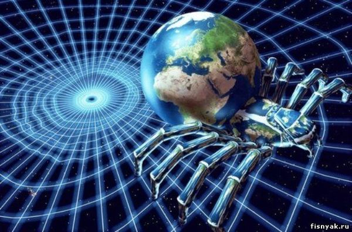

История создания

Интернет - (англ. Internet от лат. inter между и англ. net сеть, паутина), международная (всемирная) компьютерная сеть
электронной связи, объединяющая региональные, национальные, локальные и другие сети. Способствует значительному
увеличению и улучшению обмена информацией, прежде всего научно-технической. Объединяет свыше 50 млн. коллективных и
индивидуальных пользователей (каждый со своим электронным адресом) во всем мире. Его появление и развитие обусловлено
различными историческими факторами и причинами. После создания компьютеров появилась новая идея: объединить их в единую
сеть, что позволило бы быстро и без потери данных обмениваться информацией. Суть этой сети состояла в принципиально
новом соединении компьютеров, при котором их связь не зависела бы от одного сервера. Поставленной задачей плотно
занялось Агентство Исследовательских Проектов Особой Сложности Соединенных Штатов Америки, именуемое ARPA, и активно
финансировалось и поддерживалось правительством США.
Существует также другая версия создания такого явления, как Интернет:
1961 год, Леонард Кейнрок публикует статью с изложением пакетной пересылки информации,
2 сентября 1969 года в Калифорнийском университете он вместе со своей командой успешно соединил компьютер с
маршрутизатором (сетевое устройство передачи данных). Первая же попытка соединить два компьютера в сеть закончилась
неудачей. Но главное было сделано: появилась ощутимая возможность реализовать соединение.
Дальнейшее развитие и создание Интернета пошло более динамично.
1963 год: Руководитель компьютерной лаборатории ARPA Джон Ликлидер предлагает первую детально разработанную концепцию
компьютерной сети.
1967 год: Ларри Робертс предлагает связать между собой компьютеры ARPA. Начинается работа над созданием ARPANET.
1969 год: ARPANET заработал. К нему подключаются компьютеры ведущих лабораторий и исследовательских центров США.
1971 год: Рэй Томлисон, программист из компьютерной фирмы Bolt Beranek and Newman, разрабатывает систему электронной
почты и предлагает использовать символ @, который заменяет английский предлог «at».
1974 год: открывается первая коммерческая версия ARPANET - сеть Telenet,
в 1976 году Роберт Меткалф создает Ethernet - первую локальную компьютерную сеть.
1982 год рождение современного Интернета. ARPA создала единый сетевой язык TCP/IP. Таким образом, Arpanet стала
представлять собой высокоскоростную магистраль (backbone), обеспечивающую физическую связью между узлами (хостами).
1991 год. Европейская физическая лаборатория CERN создала известный всем протокол - www - World Wide Web. Эта разработка
была сделана, прежде всего, для обмена информацией среди физиков. Появляются первые компьютерные вирусы,
распространяемые через Интернет.
1993 год создается первый интернет-браузер Mosaic, созданный Марком Андреесеном\Marc Andreesen в Университете штата
Иллинойс. В Сети действует 600 сайтов.
В 1996 году началось соревнование между браузерами Netscape, созданными под руководством Марка Андреесона, и Internet
Explorer, разработанным компанией Microsoft.
К середине 2008 года число пользователей, регулярно использующих Интернет, составило около 1,4 млрд человек (около
четверти земного населения).